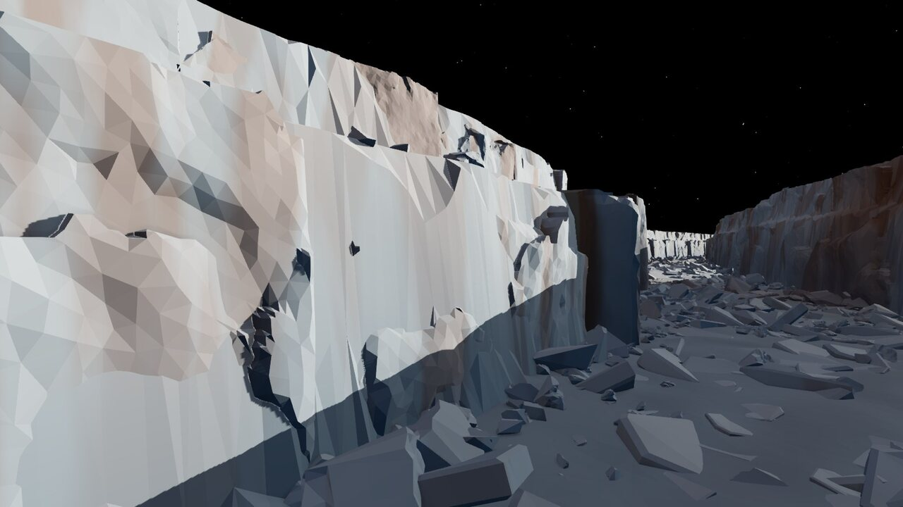
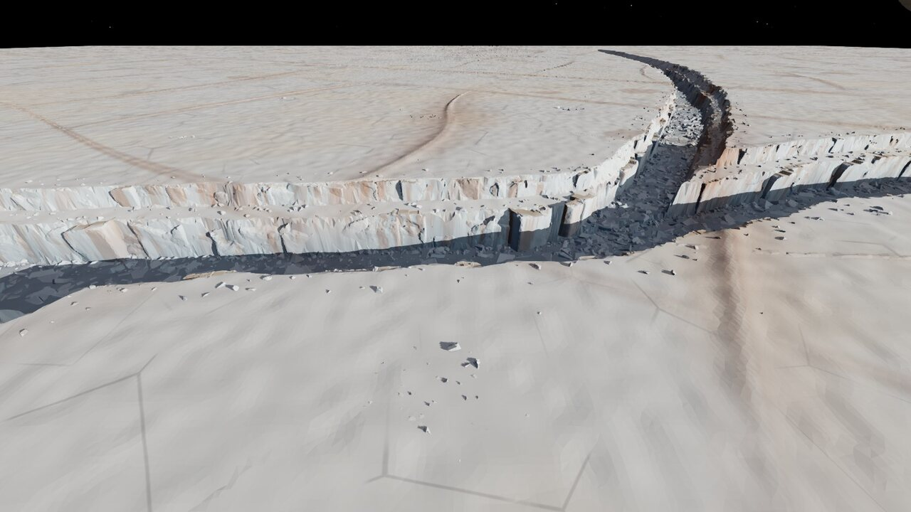
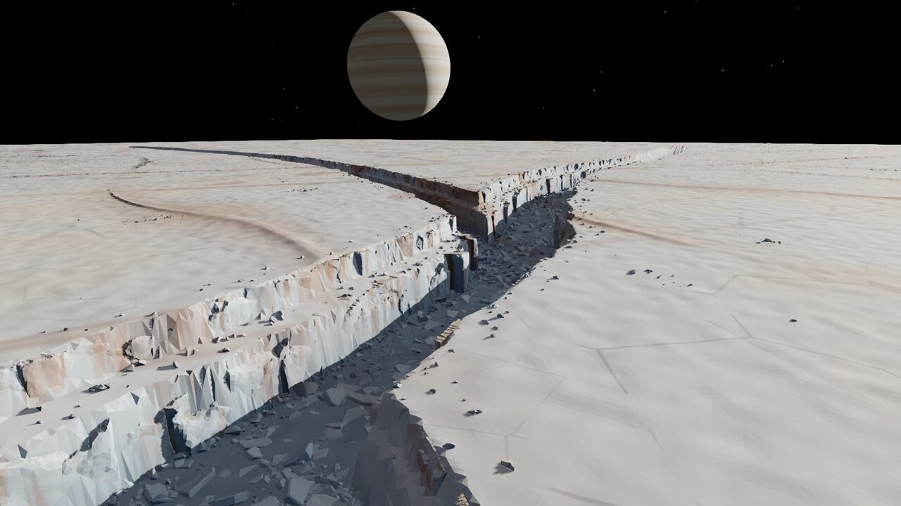
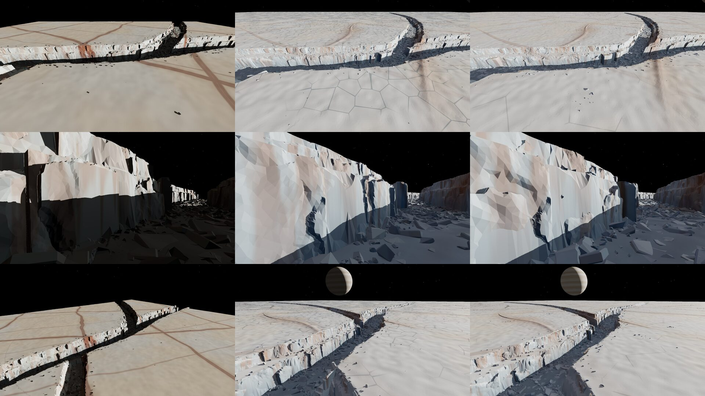

Recovered session evidence / Europa analogue
Ice rift canyon
Scanned terrestrial ice walls and fragments in a branching, authored chasma. An analogue composition for Europa.
Original notes and credits
Capture and comparison archive
Original filenames preserve round and view context. These are rendered prototypes, not source photographs.







